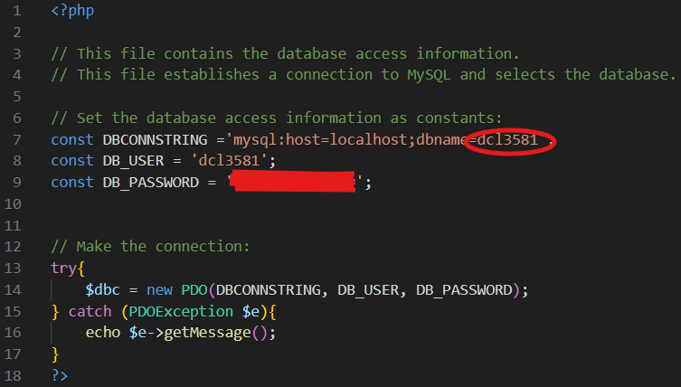
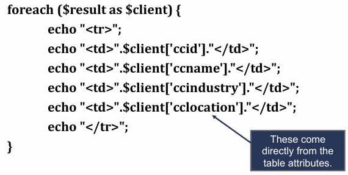

PHP x SQL
This guide assumes previous SQL knowledgePHP offers three ways to connect to and interact with a MySQL database:
- MySQL extension
- MySQLi
- PHP Data Objects: PDO
This study guide focuses on PDO.
PDO is an API in PHP. MySQL APIs are interfaces (set of functions) that let PHP talk to a MySQL database. When you write PHP code that sends queries to MySQL, you're using a MySQL API- the "language bridge" between PHP and the MySQL database engine. Think of PDO as a universal translator for databases.
- Instead of learning a new language every time you date a new database (MySQL, PostgreSQL, SQLite), PDO lets you talk to all of them using the same words.
- You just say what you want, and PDO translates it for whichever database you're connected to.
The process for communicating with the database is as follows (SELECT Queries):
- Connect to the MySQL database using the hostname, username, password, and database name. This generates a resource.

- $dbc = new PDO('mysql:host=localhost;dbname=mydb', 'user', 'pass');
- That's like saying, "Hi translator (PDO), connect me to this MySQL kitchen."
- If later you switched to PostgreSQL:
$dbc = new PDO('pgsql:host=localhost;dbname=mydb', 'user', 'pass'); Same code, just a different DSN string.
- Prepare an SQL query.
- $sql = "SELECT * FROM table_name WHERE column_name = attribute";
- It's common to put these steps into a try...catch block with catch being:
catch(PDOEXception $e){echo $e->getMessage(); }
- Execute the query and save the result.
- $result = $dbc->query($sql);
- Extract the data from the result (usually with a foreach loop.

- Close the connection to the database.
- $result->closeCursor();
- This is optional when no further queries will be executed because php will close the connection automatically.
The process for communicating with the database is as follows (INSERT Queries):
- Collect and clean the form data the user submitted.
- You usually get data from $_POST (like name, email, etc.).
- trim() strings before saving them:
- Connect to the database with PDO (same as in the SELECT section).
$dbc = new PDO('mysql:host=localhost;dbname=mydb','user','pass');- Do this in a try...catch so you can catch connection errors and show a friendly message instead of white screen of death.
- Build the SQL INSERT string.
- Basic SQL looks like:
INSERT INTO tableName (col1, col2, col3) VALUES ('string', 123, 4.56); - In PHP, you usually build that as a string using your variables:
-
$sql = "INSERT INTO Orders (custId, orderDateTime, instructions) VALUES ($custId, NOW(), '$notes')";
-
- Important rules:
- NOW() is a MySQL function that stores the current date+time in that row. No quotes.
- If a column is AUTO_INCREMENT (example: id INT AUTO_INCREMENT PRIMARY KEY), you do not list it in the column list, because MySQL will generate it for you.
- Example with auto_increment primary key 'orderId':
INSERT INTO Orders (custId, orderDateTime, instructions) VALUES ($custId, NOW(), '$notes');
Notice we did not includeorderId. -
When you create the query string variable in php, use double quotes for
interpolation and put single quotes around the php variable names that contain strings. For
example:
$sql = " INSERT INTO JJ_contacts (firstName,...) VALUES('$firstName ', ...) ";
- Basic SQL looks like:
- Run the INSERT query.
- For INSERT/UPDATE/DELETE, you don't use
query(). - You use
exec()becauseexec()is for statements that change the database. -
$affected = $dbc->exec($sql); $affected= the number of rows that were actually inserted.- If it inserted 1 new row, you get 1.
- If something failed (ex: bad SQL),
exec()returnsfalseor throws an error if you're using exceptions.
- You can use this to check success:
-
if($affected == 0){
echo "Sorry, your order was not saved.";
}else{
echo "Your order was saved!";
}
-
- For INSERT/UPDATE/DELETE, you don't use
- (Optional but very common) Get the new row's ID.
- If the table has an AUTO_INCREMENT primary key like
orderId, MySQL makes a new unique ID for you automatically. - PDO lets you ask: "Hey, what ID did you just give that row?"
-
$newOrderId = $dbc->lastInsertId(); - Why this matters:
- You insert into
Ordersfirst... - Then you want to insert the individual pizza toppings into an
OrderItemstable and link them to that same order. - You NEED that new
orderIdto use as a foreign key in the next INSERT.
- You insert into
- So the flow is:
- INSERT main row (customer/order info)
- Get
$newOrderId = $dbc->lastInsertId(); - INSERT related rows that point back to that ID
- If the table has an AUTO_INCREMENT primary key like
- Confirm and/or show a success message to the user.
- After saving to the database, you usually tell the user "Order placed", "Account created", etc.
In summary: PDO (PHP Data Objects) is a database abstraction layer built into PHP that provides
- A unified API for multiple databases (MySQL, SQLite, PostgreSQL, etc.)
- Built-in prepared statements (prevent SQL injection)
- Error handling via exceptions
- Consistent methods (prepare(), execute(), fetch(), etc.) across all supported databases
PDO Cheat Sheet |
|
|---|---|
$result = $dbc->query($sql); |
Performs a query on the database using the current database connection and SQL statement. Returns TRUE if the query runs, FALSE if not. (NOTE: TRUE is returned even if the number of rows in the result is zero.) |
foreach($result as $row) { ... } |
|
$row = $result->fetch(); |
Get just ONE row from the result instead of looping all of them. |
$item = $result->fetchColumn(); |
Get the first column of the first row quickly (like just an ID or a count). |
$numRows = $result->rowCount(); |
How many rows came back from the SELECT. |
$result->closeCursor(); |
An optional (but good practice) command to free the memory taken by $result. Needed if there are subsequent queries. |
$affected = $dbc->exec($sql); |
Run INSERT/UPDATE/DELETE and get how many rows were changed. |
$id = $dbc->lastInsertId(); |
After an INSERT into a table with AUTO_INCREMENT, get the new ID that was just created. |